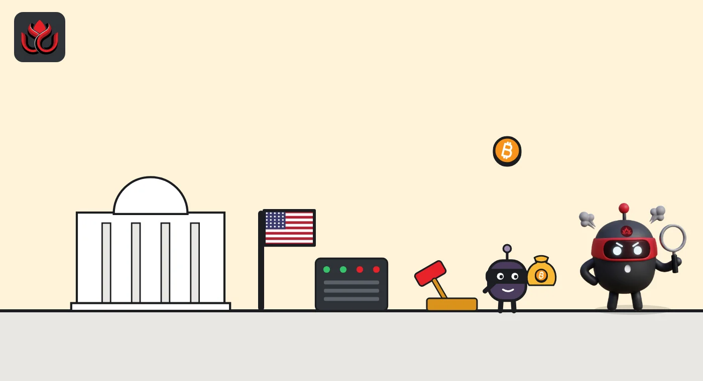

SEC cases fall to 348 from 456 as crypto examples include a $95.6 million mining fraud
The SEC's fiscal 2026 enforcement results, released November 10, show 348 actions and $1.095 billion in ordered money. The crypto cases it highlights are retail frauds, from a $14 million fake platform scheme to an FTX audit case.
Key points
- The SEC filed 348 enforcement actions in fiscal 2026, which ended September 30, down from 456 in fiscal 2025. Standalone cases fell to 235 from 303.
- It obtained orders for $1.095 billion: $752 million in disgorgement and interest and $343 million in civil penalties. About $731 million went back to more than 250,000 harmed investors.
- Crypto cases named in the release include three purported crypto trading platforms accused of taking at least $14 million and a bitcoin mining founder accused of raising $95.6 million from about 6,400 investors.
What the SEC reported for fiscal 2026
The U.S. Securities and Exchange Commission (SEC) published its fiscal 2026 enforcement results on November 10, 2026. The agency's year ran to September 30.
It filed 348 actions. Of those, 235 were standalone cases and 113 were follow-on administrative proceedings, which usually bar people already sanctioned elsewhere. It also halted trading in 13 cases over suspected manipulation of issuers based in Asia. The SEC said two-thirds of its standalone cases charged at least one individual.
Chairman Paul S. Atkins said in the release that "enforcement actions and financial remedies are important measures of activity."
Money the SEC obtained orders for, fiscal 2026
US$ million
Fiscal year ended September 30, 2026. Source: SEC release 2026-113.
The crypto cases in the release
The release does not give a separate crypto count, but it names several crypto matters as examples:
- Fake trading platforms. The SEC sued three so-called crypto trading platforms, plus four investment clubs, for defrauding retail investors of at least $14 million and sending the money overseas. The release says victims were found on social media and given investment tips supposedly generated by "SI." It does not name the entities.
- Bitcoin mining. The founder and CEO of an unnamed bitcoin mining business was charged with raising more than $95.6 million from about 6,400 investors, and with misusing $48.5 million of it.
- CryptoFX. A jury in February 2026 found Ismael Sanchez, the leader of what the SEC called a $300 million Ponzi scheme involving Houston-based CryptoFX LLC, liable. The scheme targeted more than 40,000 mostly Latino investors.
- BitConnect. In July 2026, a court ordered one promoter of the BitConnect platform, charged in 2021, to pay $731,281 in disgorgement, $293,703.36 in interest and a $50,000 penalty.
- FTX audit. The SEC settled a negligence case against an audit engagement partner over audits of FTX, the collapsed exchange.

Fiscal 2026 compared with fiscal 2025
The SEC's fiscal 2025 results, released April 7, 2026, listed 456 actions, including 303 standalone cases. So total actions fell about 24% and standalone cases about 22%.
Fiscal 2025's headline money figure was $17.9 billion, but the SEC said that without amounts deemed satisfied elsewhere and the Stanford judgments it was about $1.4 billion in disgorgement and interest plus $1.3 billion in penalties. Fiscal 2026's $1.095 billion is below that adjusted total.
Other numbers rose. Money returned to harmed investors went from about $262 million to about $731 million. Whistleblower awards went from about $60 million to more than $158 million. Tips fell, from a record 53,753 to about 26,000.
Tips, whistleblowers and data tools
The SEC received about 26,000 tips in the year. It said the 65 people who got whistleblower awards were the most since fiscal 2023. The release also describes a new Office of Super Intelligence and Analytics, which it says uses data tools to spot misconduct earlier, including better blockchain and financial-flow analysis.
What it means for crypto users
The crypto examples are mostly old-style fraud: fake platforms, mining pitches and Ponzi schemes aimed at retail savers. The release says the agency focuses on cases that hurt everyday investors, such as offering frauds, Ponzi schemes and emerging technology scams.
LC Insight analysis
This section is our reading of the facts above, not a statement of fact.
- We think the list shows where the SEC now points its crypto work: fraud against small investors, not registration fights with large exchanges. None of the crypto examples is a case about whether a token is a security.
- The mention of blockchain analysis in a new data office suggests on-chain tracing will play a bigger part in finding fake platforms early.
- The money tells the same story as the case count. Fewer cases and smaller orders, but more cash went back to victims, about $731 million against $262 million a year earlier.
What's next
- Whether the SEC names the three crypto platforms and four investment clubs in court filings
- New cases from the Office of Super Intelligence and Analytics
- Distributions to CryptoFX victims after the February 2026 verdict
Disclaimer. This article is based on public information and the sources listed below as of the update time shown. It is for information only and is not investment, legal or tax advice. Figures may change as companies and authorities publish new data.
Sources
- SEC, press release 2026-113, Enforcement Annual Results for Fiscal Year 2026, November 10, 2026 (read November 11, 2026, 6:50 a.m. ET)
- SEC, press release 2026-34, Enforcement Results for Fiscal Year 2025, April 7, 2026 (read November 11, 2026, 7:00 a.m. ET)
- SEC, press releases index, showing release 2026-113 dated November 10, 2026 (read November 11, 2026, 6:48 a.m. ET)